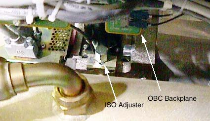

While moving the tube in the ISO direction the tube will likely move POR out of alignment. By watching both dial indicators you can keep POR in alignment while moving ISO. Go slow - being accurate while moving the tube will reduce the number of iterations, because no unnecessary heat will be put into the tube.
Illustration 2: ISO Alignment Adjuster
